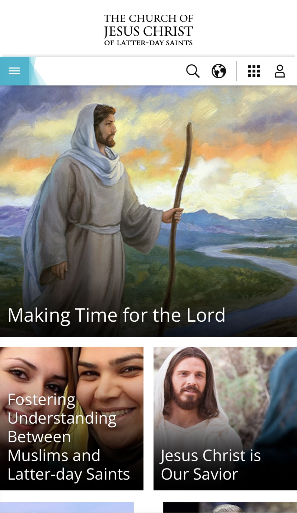

Rule of Thirds
American Eagle
ae.comWhile looking at sites that had certain design elements, I found the rule of thirds to be the most difficult one. I did, however, find that the American Eagle site was a great example of the rule of thirds. When you first get to the site you see the header, some white space and then a navigation menu. The header first attracts the viewer with its white contrasting color and the white space adds an artistic feel, but the navigation is what really interests the viewer. It is the third thing that they come to and prompts them to SHOP NOW!
Contrast
National Geographic
nationalgeographic.comContrast is probably one of the easiest design elements to recognize but one of the hardest to make look good. The white text against the black background is the main contrasting element that adds a sophistcated look to the page. The other main contrasting element on the page is the yellow underline under the word "subsricbe." Not only does the yellow contrast against the black background and the white text, but it draws the viewers eyes to it almost immediately. I found this to be a great design element because the most importnat thing for a site/magazine like National Geographic would be to get more subscribers.
Visual Hiearchy
Church of Jesus Christ of Latter-Day Saints
churchofjesuschrist.org The site for the Church of Jesus Christ has many different design elements, but I decided to focus on visual hiearchy. The first thing that catches your eye as you look at the site is the main picture that links to a recent article. This to me represents visual hiearchy because the picture is bigger than the other two photos that link to other articles. While the main images chanes from week to week or maybe every few days, I find the colors in the photo from this week to also contrast against the rest of the site, which also adds to the visual hiearchy.